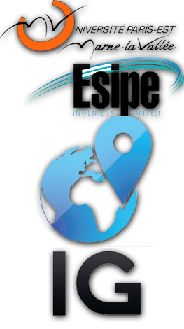

Bienvenue sur Tyrie Earth !

Tyrie Earth est un projet de serveur cartographique que je mene dans le cadre de mes etudes en informatique et geomatique (IG). Il a pour but de fournir des cartes dynamiques et enrichies de la Tyrie, l'univers de Guild Wars 2, afin de faire decouvrir aux neophytes ses regions et d'offrir aux explorateurs chevronnes un outil precis et complet pour apprivoiser ses vastes territoires.
Tyrie Earth s'adresse aussi bien aux joueurs classiques qui souhaitent trouver une zone ou un point remarquable manquant a leur progression d'exploration qu'aux joueurs dit "roleplay" qui y decouvriront des couches d'occupation des sols a meme d'apporter davantage de realisme a cet univers, et donc d'ameliorer l'immmersion du joueur.
Vous pouvez naviguer comme bon vous semble dans la carte et activer ou desactiver les differentes couches pour mettre en valeur les informations que vous cherchez. Ce projet est encore en construction et des changements peuvent survenir.
N'hesitez pas a me contacter si vous trouvez un bug. (l'absence d'accent n'est pas un bug..)